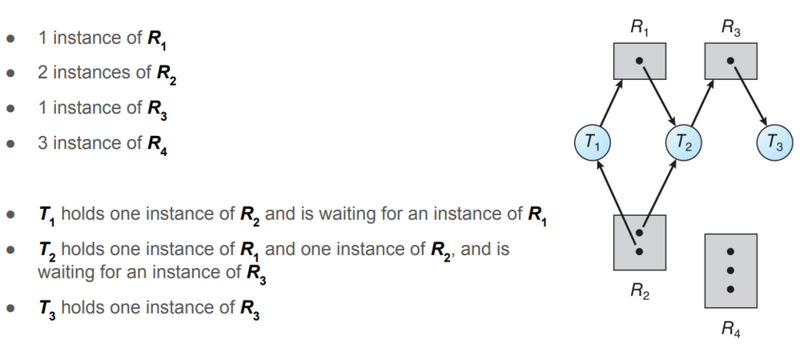
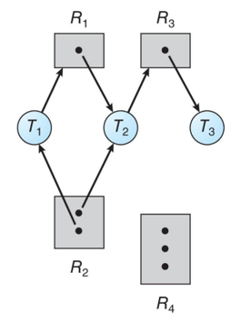
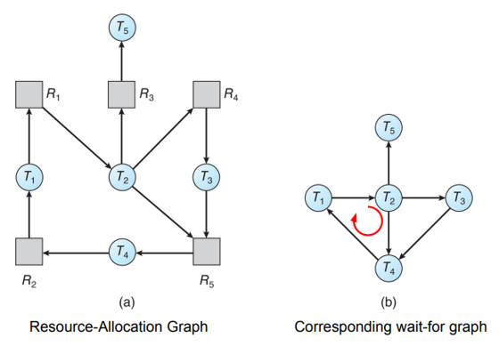

Condizioni di Coffman, grafo di allocazione risorse, prevenzione, evitamento (Algoritmo del Banchiere), rilevamento e recovery dallo stallo.
In un sistema operativo, un processo o thread utilizza una risorsa seguendo sempre un ciclo rigoroso in 3 fasi: Richiesta, Uso e Rilascio.
Un deadlock è una situazione in cui un insieme di processi è bloccato in attesa di risorse detenute da altri processi dello stesso insieme, formando un ciclo di attese senza via d'uscita. Il sistema si blocca completamente senza possibilità di progredire.
Coffman et al. (1971) identificarono le quattro condizioni che devono essere tutte simultaneamente soddisfatte perché si verifichi un deadlock:
1. Mutual Exclusion: almeno una risorsa è non condivisibile (solo un processo alla volta può usarla).
2. Hold and Wait: un processo detiene almeno una risorsa e aspetta di acquisirne altre detenute da altri processi.
3. No Preemption: le risorse non possono essere sottratte forzatamente a un processo; possono solo essere rilasciate volontariamente.
4. Circular Wait: esiste una catena circolare di processi, dove ognuno aspetta una risorsa detenuta dal successivo nella catena.
Il Resource Allocation Graph (RAG) è uno strumento grafico per analizzare lo stato del sistema. I nodi sono di due tipi: processi (cerchi) e risorse (rettangoli con punti che rappresentano le istanze). Gli archi sono di due tipi: un arco da processo a risorsa ($P_i\rightarrow R_j$) indica una richiesta; un arco da risorsa a processo ($R_j\rightarrow P_i$) indica un'assegnazione.
Se il grafo non ha cicli → nessun deadlock. Se c'è un ciclo e ogni tipo di risorsa ha una sola istanza → deadlock certo. Se ci sono istanze multiple → il ciclo è condizione necessaria ma non sufficiente; serve analisi ulteriore.

La prevenzione agisce a livello di design del sistema, garantendo che almeno una delle quattro condizioni di Coffman non possa mai verificarsi. È l'approccio più conservativo.
Eliminare la Mutual Exclusion è impossibile per risorse intrinsecamente non condivisibili. Eliminare Hold and Wait: richiedere che ogni processo acquisisca tutte le risorse necessarie prima di iniziare, oppure che rilasci tutto ciò che ha prima di richiedere nuove risorse. Eliminare No Preemption: il SO può sottrarre risorse a un processo (funziona per risorse il cui stato è facilmente salvabile, come registri CPU). Eliminare Circular Wait: imporre un ordinamento globale sulle risorse (ogni risorsa ha un numero unico) e obbligare ogni processo a richiedere le risorse in ordine crescente; questa è la strategia più pratica.
$\text{Se il grafo non contiene cicli }\implies \text{Non ci sono deadlock}$ $\text{Se il grafo contiene cicli e } R_i=1 \ \forall i \implies \text{Deadlock}$ $\text{Se il grafo contiene cicli e } R_i>1 \ \forall i \implies \text{Possibile deadlock}$
L'Algoritmo del Banchiere di Dijkstra è la strategia di evitamento più famosa. Il SO, prima di concedere una risorsa, simula l'allocazione e verifica se il sistema rimarrebbe in uno stato sicuro: uno stato da cui esiste almeno una sequenza sicura di completamento di tutti i processi, anche nel caso pessimistico in cui ogni processo richieda il massimo delle risorse dichiarate.
Richiede che ogni processo dichiari preventivamente il massimo numero di istanze di ogni risorsa che potrà richiedere. Usa quattro strutture dati: Available (risorse disponibili), Max (massimo dichiarato per processo), Allocation (risorse attualmente assegnate), Need (= Max − Allocation). La verifica di sicurezza ha complessità $O(n^2\cdot m)$ dove n è il numero di processi e m il numero di tipi di risorse. In pratica è poco usato perché richiede informazioni sui massimi che raramente sono note in anticipo.
L'Algoritmo del Banchiere è ideale per risorse con istanze multiple. Se il sistema ha solo singole istanze per ogni tipo di risorsa, l'Avoidance si fa usando una variante del Resource Allocation Graph che introduce i Claim Edge (Archi di Rivendicazione).

Nell'approccio del rilevamento il SO non previene né evita i deadlock, ma li lascia avvenire e li rileva periodicamente.
Caso 1: Singola Istanza (Wait-for Graph)
Il SO mantiene un Wait-for graph, dove i nodi sono esclusivamente i thread. Un arco
$T_i \rightarrow T_j$ indica che $T_i$ sta aspettando una risorsa detenuta da
$T_j$. Il sistema invoca periodicamente un algoritmo: se ci sono cicli, ci sono deadlock.

Caso 2: Istanze Multiple
Si utilizza un algoritmo simile, con matrici Allocation, Request e Available.
Una volta rilevato un deadlock, il SO deve ripristinare il funzionamento normale. Ci sono due macro-strategie: Process Termination e Resource Preemption.
Con la terminazione dei processi, il SO può abbortire tutti i processi nel deadlock (drastico, semplice) o abbortirli uno alla volta, verificando dopo ognuno se il deadlock è risolto (meno impattante ma costoso). Il processo da abbortire viene scelto in base a criteri di costo: priorità, tempo già consumato, risorse detenute, tipo di processo.
Con la preemption delle risorse, il SO sottrae risorse a un processo vittima scelto e le assegna ad altri. Il processo vittima deve essere riportato a uno stato precedente (rollback a un checkpoint). Problemi: scegliere la vittima minimizzando il costo, evitare la starvation (la stessa vittima non deve essere sempre scelta).